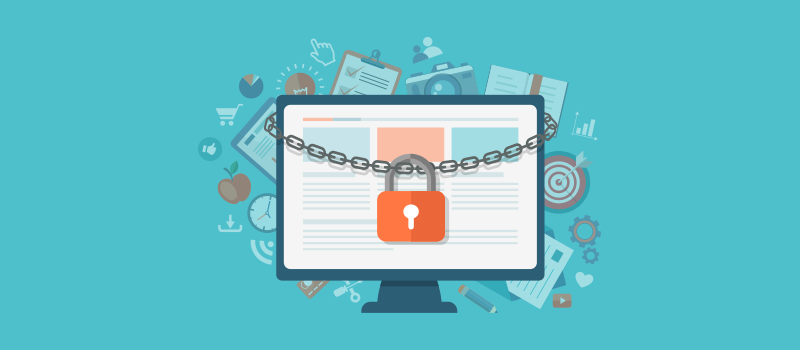
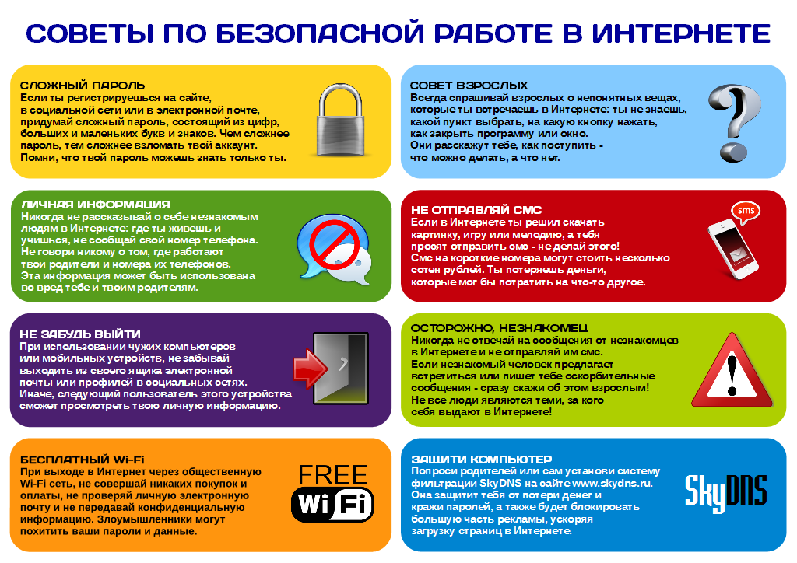

Разделы урока
Введение
В эпоху цифровой революции, когда интернет становится неотъемлемой частью нашей повседневной жизни, вопрос безопасности в сети приобретает все большее значение. С каждым днем мы все больше зависим от онлайн-сервисов для работы, общения, развлечений и осуществления финансовых операций. Однако с этим ростом возникают и новые угрозы: хакерские атаки, киберпреступность и нарушение конфиденциальности данных становятся все более распространенными. В этом контексте, понимание и соблюдение базовых правил безопасности в сети становится необходимостью для защиты нашей личной информации и обеспечения безопасности наших цифровых активов. Давайте рассмотрим основные принципы и практики, которые помогут нам оставаться безопасными в онлайн-мире.
Видео-урок
Базовые правила
Вот несколько базовых правил, которые помогут вам оставаться защищенными в онлайн-пространстве:
1. Используйте сложные пароли: Создавайте уникальные пароли для каждого аккаунта, состоящие из комбинации букв, цифр и специальных символов. Избегайте очевидных паролей, таких как "123456" или "password".
2. Не посещайте сомнительные сайты: Остерегайтесь сайтов с подозрительным содержанием, таких как торрент-трекеры, сайты для взлома или нелегального скачивания контента. Посещение таких ресурсов может повлечь за собой угрозы для вашей безопасности и конфиденциальности.
3. Обновляйте программное обеспечение: Регулярно обновляйте операционные системы, антивирусное и антишпионское программное обеспечение на ваших устройствах. Обновления часто содержат исправления уязвимостей, которые могут использоваться злоумышленниками.
4. Будьте осторожны в общении: Не разглашайте личную или финансовую информацию в сети без необходимости. Будьте осмотрительны при общении с незнакомыми людьми в социальных сетях или в мессенджерах.
5. Используйте защищенные сети: Избегайте подключения к ненадежным или открытым Wi-Fi сетям, особенно при осуществлении финансовых транзакций или вводе личной информации.
6. Включите двухфакторную аутентификацию: Воспользуйтесь возможностью двухфакторной аутентификации, где это возможно. Это добавляет дополнительный уровень защиты к вашим аккаунтам, требуя не только пароль, но и дополнительный проверочный код.
7. Регулярно делайте резервные копии данных: Важно регулярно создавать резервные копии данных на внешние носители или в облако, чтобы в случае атаки или повреждения у вас была возможность восстановить свою информацию.
Соблюдение этих базовых правил поможет вам защитить свою конфиденциальность и безопасность в цифровом мире. Не забывайте быть бдительными и осмотрительными при взаимодействии в онлайн-среде.
